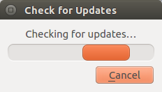
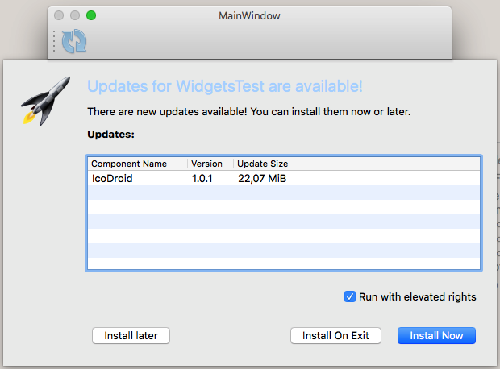
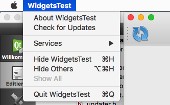
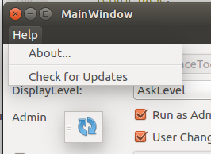

|
QtAutoUpdater
1.0.0
A library to automatically check for updates and install them
|
|
QtAutoUpdater
1.0.0
A library to automatically check for updates and install them
|
A library to automatically check for updates and install them. This repository includes:
Github repository: https://github.com/Skycoder42/QtAutoUpdater
Here some sample screenshots of the gui (The rocket of the information dialog is the "application icon" and depends on your application)
| Dialog Sample | Windows | Mac | X11 |
|---|---|---|---|
| Progress Dialog | 
| 
|

|
| Information Dialog | 
|

| 
|
| Update Panel | 
| 
| 
|
| Update Action | 
|

|

|
The usage of this library is not that complicated. However, to make this work you will have to use the Qt Installer Framework to create and installer/updater. If you already now how to to that, just check out the examples below. If not, here are some links that will explain how to create an online-installer using the framework. Once you have figured out how to do that, it's only a small step to the updater library:
Important:
Since this library requires the maintenancetool that is deployed with every Qt Installer Framework installation, the examples cannot be tested without a maintenancetool! If you intend to use this library, the maintenancetool will be available for your final application. For testing purpose or the examples, I set the path to the MaintenanceTool that is deployed with the installation of Qt (since you all should have at least that one). So make shure to adjust the path if you try to run the example.
Not a real example, but an application of mine that makes use of the library. If you want to see a full and working example with an installer, check out https://github.com/Skycoder42/IcoDroid
The following example shows the basic usage of the updater. It creates a new updater instance that is connected to the maintenancetool located at "./maintenancetool". As soon as the application starts, it will check for updates and print the update result. If updates are available, their details will be printed and the maintenancetool is scheduled to start on exit. In both cases, the application will quit afterwards.
This example will show you the full capability of the controller. Since there is no mainwindow in this example, you will only see the controller dialogs. Please not that you can control how much of that dialogset will be shown to the user. This example is reduced! for a full example with all parts of the controller, check the Tests/WidegtsTest application.
The documentation is available within the releases and on github pages.
The documentation was created using doxygen. It includes an HTML-documentation and Qt-Help files that can be included into QtCreator (QtAssistant) to show F1-Help (See Adding External Documentation for more details).
Downloads are available via github releases. The downloads include:
include(<path_to>/qtautoupdater.pri) to your project and all the includes/libray imports/... will be done by that file!)If you want to build the QtAutoUpdater yourself, make shure that you fullfill all the requirements listed above. To build it, there are no other dependencies beside Qt itself. But please note that the project only supports Desktop Windows, OsX and X11. Trying to build it for other configurations will propably fail!
 1.8.10
1.8.10